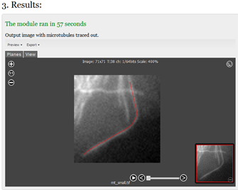

Microtubule (MT) Tracker is designed to track individual MTs in grayscale time-lapse images. You can upload a time-lapse image from your local
storage or work on images that are already in BISQUE environment.
Steps to run the algorithm:
1. Open your time-lapse image by double-clicking it in "Select an Image" or "Upload local images" tabs on the left.
2. From the menu, select "POLYLINE". Click to mark a polyline on a microtubule on first frame, which you wish to track.

3. Press the 'Run' button. Analysis may take some time depending on the image.
4. The tracking result will appear in section 3, and will be stored in BISQUE for later use. The result can be exported to Google docs, XML, CSV, or visualized as overlaid on a movie.

Notes
The tracking algorithm is sensitive to the quality of provided image. e.g. if a blank image is provided, and an arbitrary polyline is given, the
resulting MT track will not be a meaningful track.
While most image and microscopy formats are supported by BISQUE, there may be newer formats that are not supported. Please contact BISQUE team
in such cases.